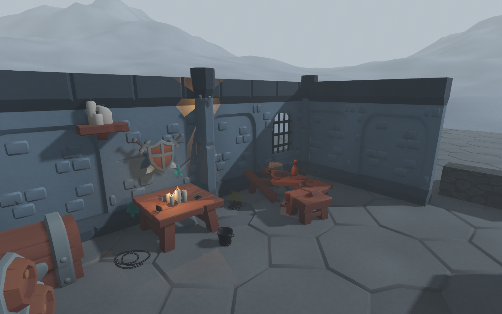
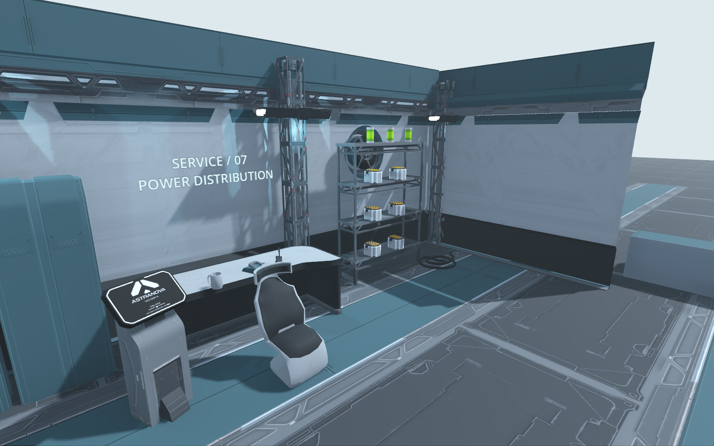
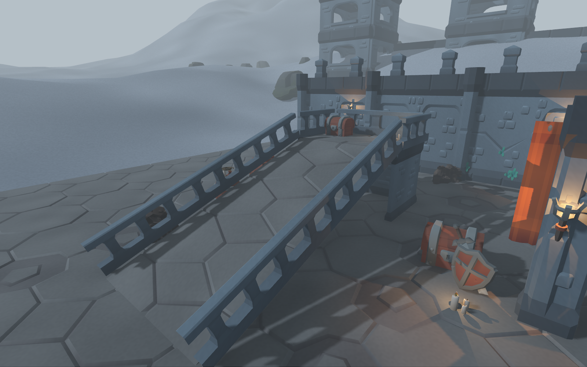
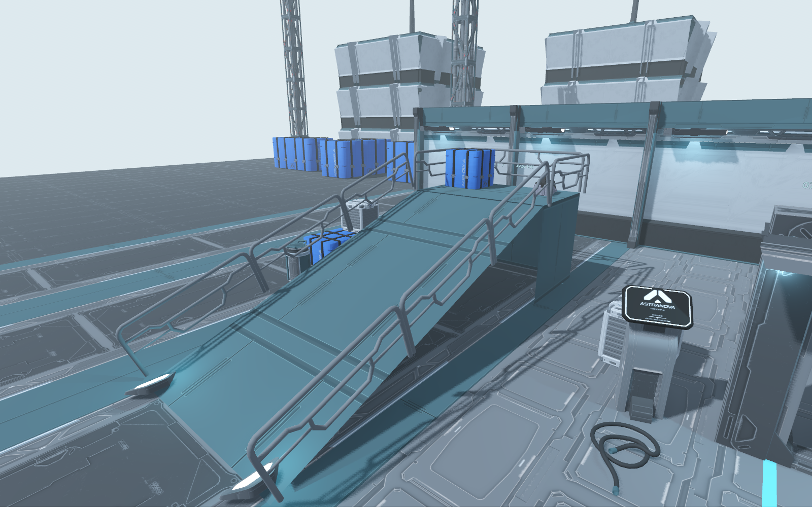

ENVIRONMENT ART / REAL ASSET STUDIES · 2026.11.12
同一测试场，三种环境美术方向
以晴日庭院的局部样板为基准，新增灰烬庭院和 Facility 07。比较建筑构件、完整地面、成组道具、材质与远景如何改变同一空间的气质。
以下均为 Godot 4.7.2 Forward+ 实机截图。当前用于美术方向审阅，主要制作范围是门洞、坡道、墙边道具与庭院地面；跳台、台阶仍保留测试块的形状。远景没有玩法碰撞，尚不是完整正式关卡。
01 · 晴日货运庭院
暖石材、木构件、红瓦与自然植被。用货箱、农产品、工具和生活杂物讲述日常作业。外围是聚落、林地与山丘。
原样板的详细说明 →
02 · 灰烬庭院
冷灰石砌、拱券与厚重石栏。用破盾、旧箱、烛台、碎陶和断桌组成废弃守卫区；少量暖光标记门洞。远处是高低错落的堡垒和荒山。
03 · Facility 07
白色面板、深色设备、青色导向线。门禁终端连接货运坡道，墙边安排维修桌、储物柜、补给架和管线；外围是设备楼、天线与货柜。
同机位切换
先选观察位置，再切换方向。灰烬与设施使用各自的真实建筑和道具素材，不同包的细节密度与低多边形风格会有差异；本轮不是参考游戏画面的等精度复刻。
 晴日庭院 · 门洞；点击图片查看原图。
晴日庭院 · 门洞；点击图片查看原图。
从 Unity 习惯到 Godot 试玩
- 导入
GodotProject/envart-pipline/project.godot，等待资源导入，按 F5 运行项目。入口现在是 envart/direction_studies/comparison.tscn。 - 按 Z / X / C 切换晴日、灰烬、科幻。切换时保留玩家位置、相机朝向和轨迹时间；轨迹会暂停，方便同帧比较。
- 用 5 / 6 / 7 查看门洞、坡道与墙边道具，8 查看远景。按 1 或 2 回到玩家视角。
- 按 0 对照原白盒，B 开关远景，H 隐藏提示。点击画面捕获鼠标，Esc 释放；WASD 移动，Shift 加速，Space 跳跃。
| 操作 | 快捷键 / 对应关系 |
|---|
| 第一 / 第三 / 自由 / 轨迹视角 | 1 / 2 / 3 / 4 |
| 自由观察升降 | E / Q；滚轮调整飞行速度 |
| 轨迹播放暂停 / 起点 / 前后定位 | P / Home / [ 与 ] |
| 运行完整对比入口 | F5，类似 Unity 的 Play 项目入口 |
| 单独运行某个方向 | 打开 ashen.tscn 或 facility.tscn 后按 F6 |
| 可独立装配的美术资源 | *_art.tscn 和 *_backdrop.tscn，类似只含模型的 Prefab；它们自身没有玩家相机 |
建议在固定观察机位或暂停的轨迹中切换。道具位置随方向不同，在某个道具将出现的位置切换可能让角色被碰撞挤开。详细相机操作见 轨迹相机 HTML 教程。
局部细节与装配检查

灰烬：墙面的拱券、裂缝与栅窗，配合烛台、武器、断桌和遗留物件。
设施：维修操作区与补给架；小道具按桌面和货架层板的真实高度落位。
石铺面与石栏沿原坡度排列；落脚平台没有改成台阶。
金属铺面、护栏与货物使用下载模型；栏杆变换和碰撞随坡面检查。场景结构、编辑与重建
comparison.gd 一次只加载一个可玩方向，切换时卸载旧场景，避免隐藏方向遗留光源或碰撞。每个方向都使用原始 BaseLab，Art 负责近景，Backdrop 负责无碰撞远景。
| 文件 / 节点 | 修改什么 |
|---|
| ashen_art.tscn / facility_art.tscn | 直接调整模型实例的位置、旋转、缩放；分组按门洞、坡道和道具功能命名。原模型路径保存在 asset_source 元数据。 |
| 模型名 + _Footprint | 新增道具的简化碰撞代理。移动道具时要一起移动对应代理。 |
| ashen_backdrop.tscn / facility_backdrop.tscn | 调整外围堡垒、岩石、设备楼和天线。不要将它们视为已经可探索的玩法区域。 |
| variant.gd | 白盒与美术表面的切换。美术模式隐藏原地面外观，避免与真实地板重叠闪烁，原碰撞不变。 |
| build_direction_base.gd | 源模型实例化、底部定位、材质适配、简化碰撞和烘焙地形高度采样。 |
Godot 的资源路径 res:// 指向项目目录。生成脚本是离线制作工具，不会每帧执行。下面的命令在仓库根目录运行，会覆盖对应生成场景；手工编辑前请另存或提交。
GODOT_BIN=/Applications/Godot.app/Contents/MacOS/Godot
"$GODOT_BIN" --headless --path GodotProject/envart-pipline \
--script res://envart/tools/build_ashen_sample.gd
"$GODOT_BIN" --headless --path GodotProject/envart-pipline \
--script res://envart/tools/build_facility_sample.gd
"$GODOT_BIN" --headless --path GodotProject/envart-pipline \
--script res://envart/tools/build_direction_scenes.gd
灰烬版读取已烘焙的晴日地形网格进行着色，并采样实际三角形高度放置岩石。若修改晴日地形，应先按照 晴日教程 用图形后端生成它，再重建灰烬版。设施版是模块化外围装配，不依赖 MultiMesh 烘焙。
真实下载素材与许可
灰烬版还复用已入库的 Quaternius 幻想道具与自然素材。每套目录都保留包内许可和 manifest.json，记录下载页、源 ZIP 的 SHA-256、模型列表和逐文件哈希。恢复素材可运行 python3 tools/install_direction_assets.py /包含四个ZIP的目录；脚本中记录所需文件名，不会自动下载或执行包内程序。
参考方向延续先前的《黑暗之魂》衰败堡垒和《传送门 2》设施空间语言；这里使用独立的免费商用素材，没有提取参考游戏资产。当前角色仍是本机安装的 Mixamo 人形比例与运动模特，未重新分发原始角色文件。
验证与当前边界
两版均检查了原始 17 个静态碰撞体不变、门洞双向穿行、坡道登顶、四种相机、观察书签朝向、白盒和远景开关。对比入口另检查 Z / X / C 切换、相机位置、轨迹时间保持，以及旧场景卸载和新增碰撞隔离。
# 真实渲染与截图；将 ashen 换成 facility 检查另一方向
"$GODOT_BIN" --path GodotProject/envart-pipline \
--script res://tests/direction_sample_visual.gd -- ashen
# 对比入口回归
"$GODOT_BIN" --headless --path GodotProject/envart-pipline \
--script res://tests/direction_comparison_smoke.gd
截图输出在 /tmp/envart-ashen 和 /tmp/envart-facility。这些检查保证场景可运行及保护输入未变，不代替美术判断、手感试玩或目标硬件性能验收。
README · 晴日样板 · 首轮失败案例记录